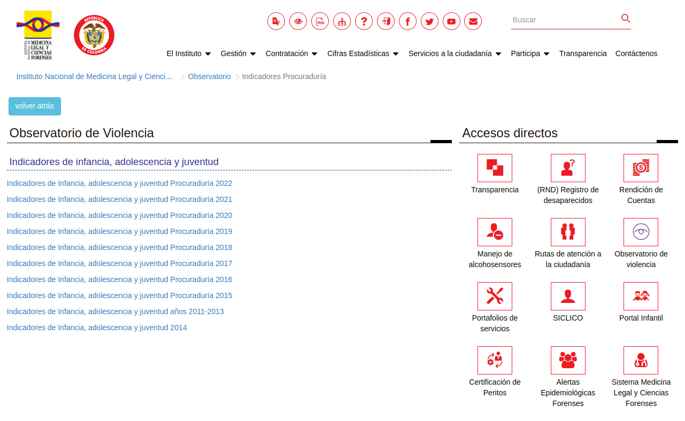
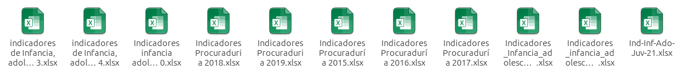
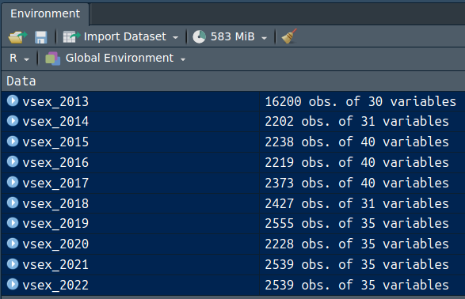
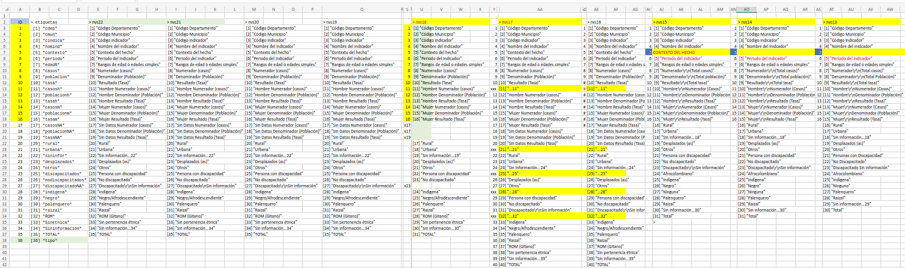
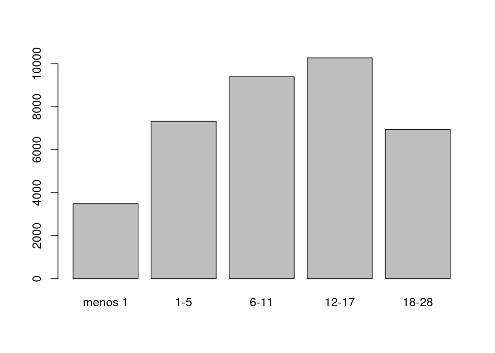
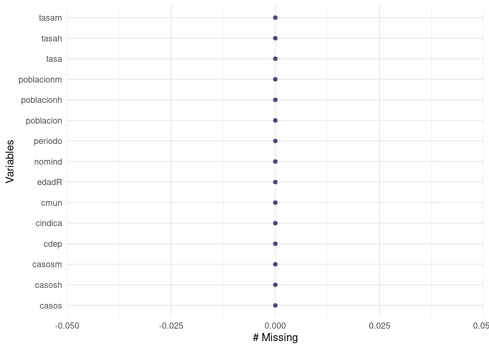

En el objetivo de poner en practica lo desarrollado en el módulo, se presenta la siguiente guía que puede ser ejecutada en RStudio Cloud o en RStudio instaldo localmente.
El material utilizado durante el proceso tambien estará disponible en el repositorio de github : https://github.com/dgonxalex80/seminarioML.git
Se recomienda clonar el repositorio en RStudio (como se realzó en las sesiones - ver videos)
Se descargan las bases de datos desde el observatorio de violencia

Y posteriormente se alojan todos libros de excel en el directorio
data

Para imprtar las base se realiza un visualizaciṕon de las hojas del libro y la hoja electrónica, con el fin de tener claridad sobre el rango que ocupa y así asignar los parámetros de la función de R a emplear
# 1. IMPORTAR LAS BASES DE DATOS
library(readxl) # paquete para leer libros de excel
vsex_2022 <- read_excel("data/Indicadores_infancia_adolescencia_juventud_Procuraduria_2022.xlsx", # nombre del archivo
sheet = "Ind. Violencia Sexual", # nombre de la hoja corespondiente
range = "B9:AJ2548") # rango que ocula la base
vsex_2021 <-read_excel("data/Indicadores_Infancia_adolescencia_juventud_2021.xlsx",
sheet = "Ind. Violencia Sexual",
range = "B9:AJ2548")
vsex_2020 <- read_excel("data/Indicadores infancia adolescencia y juventud Procuraduria 2020.xlsx",
sheet = "Ind. Violencia Sexual",
range = "B9:AJ2237")
vsex_2019 <- read_excel("data/Indicadores Procuraduria 2019.xlsx",
sheet = "Ind. Violencia Sexual",
range= "B9:AJ2564")
vsex_2018 <- read_excel("data/Indicadores Procuraduria 2018.xlsx",
sheet = "Ind. Violencia Sexual",
range= "A8:AE2435")
vsex_2017 <- read_excel("data/Indicadores Procuraduría 2017.xlsx",
sheet = "Ind. Violencia Sexual",
range = "B9:AO2382")
vsex_2017 <- read_excel("data/Indicadores Procuraduría 2017.xlsx",
sheet = "Ind. Violencia Sexual",
range = "B9:AO2382")
vsex_2016 <- read_excel("data/Indicadores Procuraduría 2016.xlsx",
sheet = "Ind. Violencia Sexual",
range = "B9:AO2228")
vsex_2015 <- read_excel("data/Indicadores Procuraduría 2015.xlsx",
sheet = "Ind. Violencia Sexual",
range = "B9:AO2247")
vsex_2014 <- read_excel("data/indicadores de Infancia, adolescencia y juventud 2014.xlsx",
sheet = "BATERIA VIOLENCIA SEXUAL 2014",
range = "A1:AE2203")
vsex_2013 <- read_excel("data/indicadores de Infancia, adolescencia y juventud2011-2013.xlsx",
sheet = "BATERIA IND. VIOLENCIA SEXUAL",
range = "A1:AD16201")
El resultado indica que se han cargado a RStudio 10 bases de datos (vsex2013 que contiene información de los años 2011, 2012 y 2013) …. vsex_2022
Con el fin de estudiar la estructura de las bases se emplea la función de R str
str(vsex_2022)tibble [2,539 × 35] (S3: tbl_df/tbl/data.frame)
$ Código Departamento : num [1:2539] 91 91 91 91 91 91 91 91 91 91 ...
$ Código Municipio : num [1:2539] 91405 91405 91407 91001 91001 ...
$ Código indicador : num [1:2539] 81 81 81 81 81 81 121 121 81 81 ...
$ Nombre del indicador : chr [1:2539] "Tasa de exámenes médico legales por presunto delito sexual contra niños, niñas y adolescentes" "Tasa de exámenes médico legales por presunto delito sexual contra niños, niñas y adolescentes" "Tasa de exámenes médico legales por presunto delito sexual contra niños, niñas y adolescentes" "Tasa de exámenes médico legales por presunto delito sexual contra niños, niñas y adolescentes" ...
$ Contexto del hecho : chr [1:2539] "PRESUNTO DELITO SEXUAL" "PRESUNTO DELITO SEXUAL" "PRESUNTO DELITO SEXUAL" "PRESUNTO DELITO SEXUAL" ...
$ Periodo del Indicador : num [1:2539] 2022 2022 2022 2022 2022 ...
$ Rangos de edad o edades simples : chr [1:2539] "(06 a 11)" "(12 a 17)" "(12 a 17)" "(01 a 05)" ...
$ Numerador (casos) : num [1:2539] 1 2 2 5 23 43 6 1 1 1 ...
$ Denominador (Población) : num [1:2539] 636 558 589 5754 6983 ...
$ Resultado (Tasa) : num [1:2539] 157.2 358.4 339.6 86.9 329.4 ...
$ Hombre Numerador (casos) : num [1:2539] 0 0 0 1 4 7 1 0 0 0 ...
$ Hombre Denominador (Población) : num [1:2539] 340 302 297 2958 3545 ...
$ Hombre Resultado (Tasa) : num [1:2539] 0 0 0 33.8 112.8 ...
$ Mujer Numerador (casos) : num [1:2539] 1 2 2 4 19 36 5 1 1 1 ...
$ Mujer Denominador (Población) : num [1:2539] 296 256 292 2796 3438 ...
$ Mujer Resultado (Tasa) : num [1:2539] 338 781 685 143 553 ...
$ Sin Datos Numerador (casos) : num [1:2539] 0 0 0 0 0 0 0 0 0 0 ...
$ Sin Datos Denominador (Población): num [1:2539] 0 0 0 0 0 0 0 0 0 0 ...
$ Sin Datos Resultado (Tasa) : num [1:2539] 0 0 0 0 0 0 0 0 0 0 ...
$ Rural : num [1:2539] 1 2 2 2 3 12 1 0 1 0 ...
$ Urbana : num [1:2539] 0 0 0 3 20 27 5 1 0 0 ...
$ Sin información...22 : num [1:2539] 0 0 0 0 0 4 0 0 0 1 ...
$ Desplazados (as) : num [1:2539] 0 0 0 0 0 0 0 0 0 0 ...
$ Otros : num [1:2539] 1 2 2 5 23 43 6 1 1 1 ...
$ Persona con discapacidad : num [1:2539] 0 0 0 0 1 1 0 0 0 0 ...
$ No discapacitado : num [1:2539] 1 2 2 5 22 42 6 1 1 1 ...
$ Discapacitado
Sin información : num [1:2539] 0 0 0 0 0 0 0 0 0 0 ...
$ Indígena : num [1:2539] 1 2 2 2 12 19 2 0 1 1 ...
$ Negro/Afrodescendiente : num [1:2539] 0 0 0 0 1 0 0 0 0 0 ...
$ Palenquero : num [1:2539] 0 0 0 0 0 0 0 0 0 0 ...
$ Raizal : num [1:2539] 0 0 0 0 0 0 0 0 0 0 ...
$ ROM (Gitano) : num [1:2539] 0 0 0 0 0 0 0 0 0 0 ...
$ Sin pertenencia étnica : num [1:2539] 0 0 0 3 10 22 4 1 0 0 ...
$ Sin información...34 : num [1:2539] 0 0 0 0 0 2 0 0 0 0 ...
$ TOTAL : num [1:2539] 1 2 2 5 23 43 6 1 1 1 ...Este procedimiento permite visualizar:
Con este propósito se realizón una revisión de los nombres de las variables para las 10 bases de datos

Se observa que las bases conciden en 16 variables, requiriendo realizar ajustes - adicionar o eliminar columnas - . Procedimiento que se realiza a continuación
# # 02- SELECCION DE VARIABLES
vsex22 <- vsex_2022[, 1:16]
vsex21 <- vsex_2021[, 1:16]
vsex20 <- vsex_2020[, 1:16]
vsex19 <- vsex_2019[, 1:16]
vsex18 <- vsex_2018[, 1:16]
#------------------------------------
# Quitar variable - espacio en blanco
vsex17 <- vsex_2017[, 1:17]
vsex16 <- vsex_2016[, 1:17]
library(dplyr) # -------------------
vsex16 <- vsex16 %>%
select(-11)
vsex17 <- vsex17 %>%
select(-11)
#------------------------------------
# Adicionar variable faltante como NA
vsex15 <- vsex_2015[, 1:17]
vsex14 <- vsex_2014[, 1:15]
vsex13 <- vsex_2013[, 1:15]
vsex15 <- vsex15 %>%
select(-11)
# Crear una nueva variable llena de NAs 2014
'Contexto del hecho' <- rep(NA, nrow(vsex14))
vsex14 <-cbind(vsex14[, 1:4], 'Contexto del hecho', vsex14[, 5:15])
vsex14 <- vsex14 %>%
mutate_at(5, ~ NA)
# Crear una nueva variable llena de NAs 2013 - 2011
'Contexto del hecho' <- rep(NA, nrow(vsex13))
vsex13 <-cbind(vsex13[, 1:4], 'Contexto del hecho', vsex13[, 5:15])
names(vsex22) [1] "Código Departamento" "Código Municipio"
[3] "Código indicador" "Nombre del indicador"
[5] "Contexto del hecho" "Periodo del Indicador"
[7] "Rangos de edad o edades simples" "Numerador (casos)"
[9] "Denominador (Población)" "Resultado (Tasa)"
[11] "Hombre Numerador (casos)" "Hombre Denominador (Población)"
[13] "Hombre Resultado (Tasa)" "Mujer Numerador (casos)"
[15] "Mujer Denominador (Población)" "Mujer Resultado (Tasa)" Con el fin de acortar el nombre de las variables por unos que no contengan espacios en blanco, facilitando el manejo posterior se promomen los siguientes nombres
names(vsex13) = c("cdep","cmun","cindica", "nomind","contexto", "periodo",
"edadR", "casos", "poblacion","tasa", "casosh", "poblacionh",
"tasah", "casosm", "poblacionm", "tasam")
names(vsex14) = c("cdep","cmun","cindica", "nomind","contexto", "periodo",
"edadR", "casos", "poblacion","tasa", "casosh", "poblacionh",
"tasah", "casosm", "poblacionm", "tasam")
names(vsex15) = c("cdep","cmun","cindica", "nomind","contexto", "periodo",
"edadR", "casos", "poblacion","tasa", "casosh", "poblacionh",
"tasah", "casosm", "poblacionm", "tasam")
names(vsex16) = c("cdep","cmun","cindica", "nomind","contexto", "periodo",
"edadR", "casos", "poblacion","tasa", "casosh", "poblacionh",
"tasah", "casosm", "poblacionm", "tasam")
names(vsex17) = c("cdep","cmun","cindica", "nomind","contexto", "periodo",
"edadR", "casos", "poblacion","tasa", "casosh", "poblacionh",
"tasah", "casosm", "poblacionm", "tasam")
names(vsex18) = c("cdep","cmun","cindica", "nomind","contexto", "periodo",
"edadR", "casos", "poblacion","tasa", "casosh", "poblacionh",
"tasah", "casosm", "poblacionm", "tasam")
names(vsex19) = c("cdep","cmun","cindica", "nomind","contexto", "periodo",
"edadR", "casos", "poblacion","tasa", "casosh", "poblacionh",
"tasah", "casosm", "poblacionm", "tasam")
names(vsex20) = c("cdep","cmun","cindica", "nomind","contexto", "periodo",
"edadR", "casos", "poblacion","tasa", "casosh", "poblacionh",
"tasah", "casosm", "poblacionm", "tasam")
names(vsex21) = c("cdep","cmun","cindica", "nomind","contexto", "periodo",
"edadR", "casos", "poblacion","tasa", "casosh", "poblacionh",
"tasah", "casosm", "poblacionm", "tasam")
names(vsex22) = c("cdep","cmun","cindica", "nomind","contexto", "periodo",
"edadR", "casos", "poblacion","tasa", "casosh", "poblacionh",
"tasah", "casosm", "poblacionm", "tasam")
names(vsex22) [1] "cdep" "cmun" "cindica" "nomind" "contexto"
[6] "periodo" "edadR" "casos" "poblacion" "tasa"
[11] "casosh" "poblacionh" "tasah" "casosm" "poblacionm"
[16] "tasam" En este paso se emplea la funcion rbind() . Esta función requiere que las bases a unir tengan el mismo número de variables y que sus nombre sean iguales.
vsex = rbind(vsex13,
vsex14,
vsex15,
vsex16,
vsex17,
vsex18,
vsex19,
vsex20,
vsex21,
vsex22)
str(vsex)'data.frame': 37520 obs. of 16 variables:
$ cdep : num 91 91 91 91 91 91 91 5 5 5 ...
$ cmun : num 91263 91405 91407 91001 91540 ...
$ cindica : num 81 81 81 81 81 81 81 81 81 81 ...
$ nomind : chr "Tasa de exámenes médico legales por presunto delito sexual contra niños, niñas y adolescentes" "Tasa de exámenes médico legales por presunto delito sexual contra niños, niñas y adolescentes" "Tasa de exámenes médico legales por presunto delito sexual contra niños, niñas y adolescentes" "Tasa de exámenes médico legales por presunto delito sexual contra niños, niñas y adolescentes" ...
$ contexto : chr "Contexto del hecho" "Contexto del hecho" "Contexto del hecho" "Contexto del hecho" ...
$ periodo : num 2011 2011 2011 2011 2011 ...
$ edadR : chr "(01 a 05)" "(01 a 05)" "(01 a 05)" "(01 a 05)" ...
$ casos : chr "0" "0" "0" "13" ...
$ poblacion : chr "649" "548" "753" "4803" ...
$ tasa : num 0 0 0 271 0 ...
$ casosh : chr "-" "-" "-" "2" ...
$ poblacionh: chr "318" "276" "378" "2464" ...
$ tasah : chr "0,00" "0,00" "0,00" "81,17" ...
$ casosm : chr "-" "-" "-" "11" ...
$ poblacionm: chr "331" "272" "375" "2339" ...
$ tasam : chr "0,00" "0,00" "0,00" "470,29" ...table(vsex$periodo)
2011 2012 2013 2014 2015 2016 2017 2018 2019 2020 2021 2022
5400 5400 5400 2202 2238 2219 2373 2427 2555 2228 2454 2539 Al revisar el tipo de las variables, se observó que la variables edadR presentava la siguiente inconsistencia :
table(vsex$edadR)
(01 a 05) (06 a 11) (12 a 17) (18 a 28)
7328 9396 10274 6949
Menores de 1 año Menores de un año
3240 248 Con el fin de corregir el problema se convierte la variable de caracter a numérica con el fin de que conserve el orden en las tablas y en los gráficos
vsex$edadR[vsex$edadR == "Menores de 1 año"] = 1
vsex$edadR[vsex$edadR == "Menores de un año"] = 1
vsex$edadR[vsex$edadR == "(01 a 05)"] =2
vsex$edadR[vsex$edadR == "(06 a 11)"] =3
vsex$edadR[vsex$edadR == "(12 a 17)"] =4
vsex$edadR[vsex$edadR == "(18 a 28)"] =5
tedadR =table(vsex$edadR)
names(tedadR) = c("menos 1", "1-5", "6-11", "12-17", "18-28")
tedadRmenos 1 1-5 6-11 12-17 18-28
3488 7328 9396 10274 6949 barplot(tedadR)
library(dplyr)
faltantes <- colSums(is.na(vsex)) %>%
data.frame()
faltantes .
cdep 85
cmun 85
cindica 85
nomind 85
contexto 2287
periodo 85
edadR 85
casos 85
poblacion 104
tasa 104
casosh 85
poblacionh 104
tasah 104
casosm 85
poblacionm 104
tasam 104Antes de pensar en eliminar la variables contexto, dado el gran número de datos faltantes (NA), se explora su distribución
table(vsex$contexto, vsex$edadR)
1 2 3 4 5
Contexto del hecho 3240 3240 3240 3240 3240
PRESUNTO DELITO SEXUAL 223 3656 5516 6294 3344table(vsex$contexto, vsex$cindica)
81 121
Contexto del hecho 12960 3240
PRESUNTO DELITO SEXUAL 15689 3344table(vsex$contexto, vsex$periodo)
2011 2012 2013 2014 2015 2016 2017 2018 2019 2020 2021
Contexto del hecho 5400 5400 5400 0 0 0 0 0 0 0 0
PRESUNTO DELITO SEXUAL 0 0 0 0 2238 2219 2373 2427 2555 2228 2454
2022
Contexto del hecho 0
PRESUNTO DELITO SEXUAL 2539Se puede ver claramente que la variables contexto está relacionada con la variable periodo y que se puede eliminar sin afectar el contenido de la información contenida en la base vsex
vsex <- vsex %>%
select(-5)
str(vsex)'data.frame': 37520 obs. of 15 variables:
$ cdep : num 91 91 91 91 91 91 91 5 5 5 ...
$ cmun : num 91263 91405 91407 91001 91540 ...
$ cindica : num 81 81 81 81 81 81 81 81 81 81 ...
$ nomind : chr "Tasa de exámenes médico legales por presunto delito sexual contra niños, niñas y adolescentes" "Tasa de exámenes médico legales por presunto delito sexual contra niños, niñas y adolescentes" "Tasa de exámenes médico legales por presunto delito sexual contra niños, niñas y adolescentes" "Tasa de exámenes médico legales por presunto delito sexual contra niños, niñas y adolescentes" ...
$ periodo : num 2011 2011 2011 2011 2011 ...
$ edadR : chr "2" "2" "2" "2" ...
$ casos : chr "0" "0" "0" "13" ...
$ poblacion : chr "649" "548" "753" "4803" ...
$ tasa : num 0 0 0 271 0 ...
$ casosh : chr "-" "-" "-" "2" ...
$ poblacionh: chr "318" "276" "378" "2464" ...
$ tasah : chr "0,00" "0,00" "0,00" "81,17" ...
$ casosm : chr "-" "-" "-" "11" ...
$ poblacionm: chr "331" "272" "375" "2339" ...
$ tasam : chr "0,00" "0,00" "0,00" "470,29" ...library(dplyr)
faltantes <- colSums(is.na(vsex)) %>%
data.frame()
faltantes .
cdep 85
cmun 85
cindica 85
nomind 85
periodo 85
edadR 85
casos 85
poblacion 104
tasa 104
casosh 85
poblacionh 104
tasah 104
casosm 85
poblacionm 104
tasam 104vsex <- na.omit(vsex)
# install.packages("naniar")
library(naniar)
gg_miss_var(vsex) # grafico de datos faltantes
table(vsex$periodo)
2011 2012 2013 2014 2015 2016 2017 2018 2019 2020 2021 2022
5400 5400 5400 2202 2238 2219 2370 2424 2552 2226 2450 2535 Realizado los ajustes a la base de datos se procede a guardar la base de datos
write.csv(vsex, "bases/vsex.csv")
saveRDS(vsex, "bases/vsex.RDS")Con el fin de contrastar el contenido de la base de datos con el conocimiento externo que poseen los usuarios de la información se realizan las siguientes tablas, resumenes y gráficas
Empezaremos con una tabla de departamento por periodo
t1 <- table(vsex$cdep,vsex$periodo)
t1
2011 2012 2013 2014 2015 2016 2017 2018 2019 2020 2021 2022
5 635 635 635 301 285 231 305 310 311 290 309 330
8 115 115 115 58 64 64 73 67 69 70 73 66
11 5 5 5 5 5 5 5 5 5 5 5 5
13 215 215 215 93 104 101 106 98 109 81 106 100
15 535 535 535 116 151 150 150 149 175 139 175 176
17 135 135 135 63 62 61 56 66 65 54 75 70
18 80 80 80 27 23 39 35 38 44 40 43 47
19 205 205 205 80 69 81 82 81 83 93 90 104
20 125 125 125 68 67 62 71 70 70 58 61 69
23 150 150 150 70 76 79 84 86 83 75 85 79
25 580 580 580 259 257 278 269 276 284 252 278 292
27 130 130 130 44 40 50 41 53 55 33 37 46
41 185 185 185 92 83 79 91 95 102 81 90 106
44 75 75 75 41 48 46 44 50 49 43 44 42
47 150 150 150 55 58 60 58 59 61 45 50 55
50 155 155 155 79 71 75 81 82 86 82 80 74
52 305 305 305 80 60 49 37 40 45 24 31 31
54 195 195 195 58 66 59 84 72 79 68 77 81
63 60 60 60 34 38 38 39 41 43 39 39 43
66 70 70 70 43 44 45 48 42 45 42 40 44
68 430 430 430 148 156 160 160 159 169 156 172 162
70 125 125 125 61 70 66 71 66 73 58 65 69
73 240 240 240 79 84 90 109 132 148 141 142 142
76 210 210 210 130 122 132 134 130 132 124 135 139
81 35 35 35 15 22 23 24 26 26 27 23 25
85 90 90 90 45 46 31 44 52 55 39 48 52
86 65 65 65 33 36 31 31 37 41 37 34 40
88 10 10 10 4 4 4 5 5 5 4 5 5
91 35 35 35 9 8 10 10 12 8 5 8 13
94 5 5 5 0 5 6 6 7 11 7 5 6
95 20 20 20 6 7 10 9 10 14 7 13 10
97 5 5 5 0 0 0 5 1 3 5 8 4
99 15 15 15 6 7 4 3 7 4 2 4 8
999 10 10 10 0 0 0 0 0 0 0 0 0# heatmap(t1, col = c("white", "red"), symkey = FALSE)